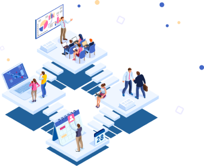

<section class="hero-section">
  <div class="wrapper hero-section__container">
    <h1 class="hero-section__title">Профессиональный<br> ИТ-аутсорсинг<br> в Челябинске</h1>
    <p class="hero-section__subtitle">
      Берем на себя ответственность за состояние и работоспособность сети,
      серверов, компьютеров и офисной техники
    </p>
    <button class="btn btn--hero" type="button" aria-label="Расчет стоимости">Расчет стоимости</button>
    <picture>
      <source media="(min-width: 1024px)" srcset="../img/hero-section-img/header-layout-desktop.webp 1x, ../img/hero-section-img/header-layout-desktop@2x.webp">
      <source media="(min-width: 768px)" srcset="">
      <source type="image/webp" srcset="../img/hero-section-img/header-layout-mobile.webp 1x, ../img/hero-section-img/header-layout-mobile@2x.webp">
      <source media="(min-width: 1024px)" srcset="../img/hero-section-img/header-layout-desktop.png 1x, ../img/hero-section-img/header-layout-desktop@2x.png 2x">
      <source media="(min-width: 768px)" srcset="">
      
    </picture>
    <p class="hero-section__description">
      Выполняем техническое обслуживание<br> компаний — от установки компьютеров до<br> закупки оборудования
      и прокладки сети.<br> Вместо 1 системного администратора в<br> штате — коллектив из 5 программистов,
      3<br> техников и 4 менеджеров-консультантов.<br> Команда справляется с поставленной<br> задачей в 3 раза
      быстрее, чем<br> администратор, работающий в одиночку.
    </p>
  </div>
</section>
